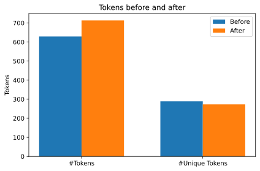

In this post I improve the previous FAQ search engine by some low hanging fruits. The requirements stay the same thus SotA is not achieved but rather it’s simply generic & easy on hardware (Raspberry Pi capable).


CoViD-19 FAQ Search Engine 2.0
As promised here’s a new improved (or is it?) FAQ Search Engine with some minor NLP-lessons added as we go, be ready to learn new (or old) things!
Previously I added some requirements and I wish keep them, here they are as a refresher:
- The end-product must be unsupervised
- No manually annotated data
- No heuristic applied (i.e. understand the data and improve result by applying domain-specific knowledge on the task)
- It should be light enough to run on a Raspberry Pi later on (hopefully on the JVM to keep it simple with my back-end)
- Must be Swedish all the way through - no translations (English models you can transfer knowledge from tends to be stronger, but I want to keep this fun!)
These specifications adds a bit of spice, keep manual labour to a minimum at the same time as they prove a challenge that doesn’t aim to achieve State of the Art but rather to be applicable and light!
With that in mind, let’s move onwards!
Improvements to be done
In the previous blog & notebook I first implemented a basic FAQ search based on finding the nearest neighbour from the embedded sentences, in the end I used Smooth Inverse Frequency Embeddings (A Simple but Tough-to-Beat Baseline for Sentence Embeddings) to embed the sentence which is an improvement from simply averaging the embeddings of the words in the sentence.
In the end I discussed some potential improvements which I wished to investigate. In this notebook I’ll deliver these “improvements” based on grabbing some low hanging fruit. The total “improvements” to try out:
- Lowercase
- Better tokenization
- Lemmatizing
- Stop words
- Ngram & Custom Embeddings (will not be done because of time)
To improve further I’d say that either A) a lot of time to understand the data in depth and apply heuristics or B) a supervised approach, which in turn require labeled data (a.k.a sweet valued time). A larger dataset would also be helpful.
All which I don’t have currently.
Re-adding the old code
First I’ll add the code from “part one” and it’ll not be commented as it has been walked through.
Further I’ve removed the download & parsing of FAQ, now the data is directly downloaded as a tsv-file allowing us to skip some libraries / code-cells.
Some new dependencies are also added, e.g. stanza which is Stanfords new NLP-lib in Python (inspired by spaCy).
%%capture
!pip install -U gensim
!pip install -U fse
!pip install stanza
!pip install stop-wordsimport numpy as np # linear algebra
import pandas as pd # data processing, CSV file I/O (e.g. pd.read_csv)
from tqdm import tqdm
import matplotlib.pyplot as plt
tqdm.pandas()
from pathlib import Path
import os
import random
import operator
import regex as re
# gensim + fasttext
from gensim.models.fasttext import FastText, load_facebook_vectors
from gensim.models import KeyedVectors
from stop_words import get_stop_words # stop-words from basically all languages
import stanza
from fse import IndexedList
from fse.models import uSIF
from fse.models.average import FAST_VERSION, MAX_WORDS_IN_BATCH
print(MAX_WORDS_IN_BATCH)
print(FAST_VERSION)10000
1# Download models etc
stanza.download('sv', logging_level='ERROR')
print("OBS!!\nPlease download the Swe fastText model & the CoViD FAQ data from links in this code cell!")
# Swe fastText reduced dimensions --> https://drive.google.com/open?id=1vaWtiSlRAZ3XCdtnSce_6dwQ0T5x0OEJ
# CoViD FAQ data --> https://github.com/londogard/nlp-projects/blob/master/datasets/covid.tsvOBS!!
Please download the Swe fastText model & the CoViD FAQ data from links in this code cell!Loading all the models
This might take a little while, even though the dimensions are reduced the model is pretty large.
ft_wv = load_facebook_vectors('~/git/nlp-projects/models/cc.sv.100.bin')
df = pd.read_csv('~/git/nlp-projects/datasets/covid.tsv', sep='\t')
nlp = stanza.Pipeline(lang='sv', processors='tokenize', logging_level='ERROR')
model = uSIF(ft_wv, workers=4, lang_freq="sv")
flatten = lambda l: [item for sublist in l for item in sublist] # Helper function to flatten a listGoing forward
Let’s get on to adding our improvements
1. Tokenization & lower-case
The first and forthmost improvement is to lowercase the text and then tokenize it using a better method of tokenization.
Let’s take a look at how stanza helps us out by applying a much better tokenization.
q = "Hej där borta! Jag känner igen dig, Johan's kompis? Eller är det Johannas?"
stanza_tokenize = lambda x: [token.text for sentence in nlp(x).sentences for token in sentence.tokens]
prev = q.split()
new = stanza_tokenize(q)
print(f"Previously:\t{prev[:12]}..")
print(f"After:\t\t{new[:12]}..")Previously: ['Hej', 'där', 'borta!', 'Jag', 'känner', 'igen', 'dig,', "Johan's", 'kompis?', 'Eller', 'är', 'det']..
After: ['Hej', 'där', 'borta', '!', 'Jag', 'känner', 'igen', 'dig', ',', 'Johan', "'", 's']..So, what are we looking at?
Stanza handled our tokenization and increased the number of tokens, can this really be good!?
Yes! Keep calm and don’t jump the ship yet, the increased number of tokens will be followed by a decrease of unique tokens, and indirectly out of vocobulary (OOV) tokens. Unlike what we set out to do we still don’t lower-case the output, this will follow later, now let me explain what the tokenization helps us achieve:
- Punctuation, e.g. [!,?..], is tokenized into its own token.
- Some compound words are split up, e.g. Johan’s is now Johan, ’, s which is three (3) separate tokens rather than one.
Because of the updated tokenization fredag and fredag! is now tokenized as [fredag] and [fredag, !], this in fact turns fredag into the same token in both thus achieving the same vector when embedded which is great, because it really means the same. The exclamation mark itself also applies the same meaning to all places it’s applied, which in itself is an improvement now also as we embed it separately.
Why is this good?
Even though we see a direct increase in number of tokens we see a decrease of number of unique tokens because we now tokenize borta, borta?, & borta! as the same token, with one additional for the punctuation in the two latter cases rather than 3 separate tokens which would map to different data.
The coverage of our Word Embeddings also increase because we now tokenize the text better. Perhaps borta! does not exist but borta surely do exist in the embedding dictionary / lookup.
# A bit ugly, that's what happens when you're lazy
def test_dimensions(preprocessing=[stanza_tokenize]):
prev = flatten(df['question'].apply(lambda x: x.split()).tolist())
post = flatten(df['question'].apply(lambda x: preprocess(x, preprocessing)).tolist())
print(f"Previously: {len(prev)} tokens ({len(set(prev))} unique)")
print(f"Post: {len(post)} tokens ({len(set(post))} unique)")
print(f"Token reduction by ~{100 * (1- len(set(post))/len(set(prev))):.1f} %")
labels = ['#Tokens', '#Unique Tokens']
width = 0.35
x = np.arange(len(labels))
fig, ax = plt.subplots()
rects1 = ax.bar(x - width/2, [len(prev), len(set(prev))], width, label='Before')
rects2 = ax.bar(x + width/2, [len(post), len(set(post))], width, label='After')
ax.set_ylabel('Tokens')
ax.set_title('Tokens before and after')
ax.set_xticklabels(labels)
ax.set_xticks(x)
ax.legend()
fig.tight_layout()
plt.show()
# preprocessing is a list of lambda functions to apply
def preprocess(text, preprocessing):
for f in preprocessing:
text = f(text)
return textLet’s take a look how much this actually mattered!
test_dimensions()Previously: 629 tokens (289 unique)
Post: 713 tokens (273 unique)
Token reduction by ~5.5 %
The expectations set up has been achieved and we can clearly see that the raw number of tokens grew while the unique token count shrinked.
Applying lower-case to the text will further reduce the number of unique tokens, and obviously keep the number of tokens at the same count.
Let’s add lower-casing and see what happens!
lowercase = lambda x: x.lower()
preprocess_funcs = [lowercase, stanza_tokenize]
test_dimensions(preprocessing=preprocess_funcs)Previously: 629 tokens (289 unique)
Post: 712 tokens (260 unique)
Token reduction by ~10.0 %Lower-casing
Going from 5.5 to 10 % reduction is nothing to sneeze at, by applying these two simple techniques we now have the same data in a better format which allows us to have a lower number of unique tokens.
Pretty awesome right?
Let’s get on with this and apply the preprocessing to the questions and test it out with the FAQ-search!
df['X'] = df['question'].apply(lambda x: preprocess(x, preprocess_funcs))
df['X'].head()0 [vad, är, coronavirus, ?]
1 [vad, är, covid-19, ?]
2 [vad, skiljer, covid-19, från, säsongsinfluens...
3 [vilka, är, symtomen, på, covid-19, ?]
4 [hur, vet, jag, om, mina, symtom, beror, på, p...
Name: X, dtype: objectTesting the new input-data
Now that we’ve created our input data we need to test our model on this!
By applying the IndexedList which is the dataformat SFE wants as input we can train the model and then test it.
sfe_format = IndexedList(df['X'].tolist())
model.train(sfe_format)(75, 712)# Helper method to test the closest questions
def get_n_closest_questions(question, preprocessing, n=4):
q_fixed = preprocess(question, preprocessing)
resp = model.sv.similar_by_sentence(q_fixed, model=model, indexable=df['question'].tolist()) # [([tokens], score)]
resp = [f'{result[2]:.2f}: {result[0]}' for result in resp]
print('\n'.join(resp[:n]))get_n_closest_questions("kan min hamster bli smittad?", preprocess_funcs)0.67: Kan man bli smittad av en person som har covid-19 men som inte har några symtom?
0.63: Kan covid-19 smitta mellan djur och människa och kan mitt husdjur smittas av viruset?
0.54: Kan viruset smitta till människa via post och paket?
0.42: Kan smitta överföras från mygg till människa?get_n_closest_questions("Hur får jag min son att förstå?", preprocess_funcs)0.82: Hur pratar man med barn om det nya coronaviruset?
0.80: Vad är covid-19?
0.78: Hur sjuk blir man av covid-19?
0.77: Hur länge är man sjuk av covid-19?2. Lemmatization and Stop Words
Let’s try to further improve this by actually lemmatizing and applying stop-words!
Lemmatization
So what is Lemmatization? Quoting Stanfords description:
For grammatical reasons, documents are going to use different forms of a word, such as organize, organizes, and organizing. Additionally, there are families of derivationally related words with similar meanings, such as democracy, democratic, and democratization. In many situations, it seems as if it would be useful for a search for one of these words to return documents that contain another word in the set.
The goal of both stemming and lemmatization is to reduce inflectional forms and sometimes derivationally related forms of a word to a common base form. For instance:
am, are, is => be
car, cars, car's, cars' => car The result of this mapping of text will be something like:
the boy's cars are different colors =>
the boy car be differ color What is stop-words?
Stop-words are words we want to throw away as they add no real purpose. In older Machine Learning approaches it was way more important to add stop-words but in newer Deep Learning with Neural Networks stop-words often can be a negative thing, removing understanding of the sentence and perhaps minor differences which makes the world for understanding.
A example of a stop-word list could be ["hej", "vem", "då", "och", ...] which means that these words would be removed from a sentence.
In our case it makes sense to remove words like ‘vad’, ‘varför’ and so on because the return of the FAQ seems to be very weighted towards these words.
nlp = stanza.Pipeline(lang='sv', processors='tokenize,mwt,pos,lemma', logging_level='ERROR')
stanza_lemma = lambda x: [token.lemma for sentence in nlp(x).sentences for token in sentence.words]
preprocess_funcs_lemma = [lowercase, stanza_lemma]
print(f'Previously:\t{preprocess("hur förklarar jag för min dotter och son?", preprocess_funcs)}')
print(f'After:\t\t{preprocess("hur förklarar jag för min dotter och son?", preprocess_funcs_lemma)}')Previously: ['hur', 'förklarar', 'jag', 'för', 'min', 'dotter', 'och', 'son', '?']
After: ['hur', 'förklara', 'jag', 'för', 'jag', 'dotter', 'och', 'son', '?']Some interesting notes
Seeing ‘min’ getting converted to ‘jag’ is both good and bad, in this case we reduce dimensionality of the problem but we loose context and understanding. jag and min certainly does not mean the same thing.
Let’s see how it pans out…
test_dimensions(preprocess_funcs_lemma)Previously: 629 tokens (289 unique)
Post: 712 tokens (228 unique)
Token reduction by ~21.1 %del model
model = uSIF(ft_wv, workers=4, lang_freq="sv")
df['X'] = df['question'].apply(lambda x: preprocess(x, preprocess_funcs_lemma))
sfe_format = IndexedList(df['X'].tolist())
model.train(sfe_format)(75, 712)get_n_closest_questions("kan min hamster bli smittad?", preprocess_funcs_lemma)0.75: Kan covid-19 smitta mellan djur och människa och kan mitt husdjur smittas av viruset?
0.69: Hur smittar covid-19?
0.68: Kan man smittas flera gånger av det nya coronaviruset?
0.63: Smittar covid-19 via vatten och mat?get_n_closest_questions("Hur får jag min son att förstå?", preprocess_funcs_lemma)0.79: Vad är covid-19?
0.75: Hur sjuk blir man av covid-19?
0.74: Hur länge är man sjuk av covid-19?
0.66: Om en person i familjen är sjuk - måste alla stanna hemma då?Analyzing the results
Improvements?
Not really, the model has an improved response to the ‘hamster-question’ but it’s way off when asking about the son.
Why?
The most likely explanation is that even though we reduce the input dimensions an awful lot we remove dimensions that brings value, and removing value is bad - just as was touched upon previously. It might be helpful in some cases, perhaps this could prove helpful for a supervised approach such as TF-IDF + Support Vector Machine.
Any good parts?
Yes, we can see some pretty hefty memory-requirement reductions when working with other types of models by applying this. Actually, in the case of this we could reduce the memory requirement by lemmatizing the dictionary of the embeddings and removing all non-lemmas. All in all, this could lead to a small performance loss but great memory win.
Stop words
As promised we shall apply stop-words, but as we saw no performance gain with lemmatization we’ll keep the old tokenization.
stop_words = get_stop_words('sv')
clean_stop = lambda x: [word for word in x if word not in stop_words]
preprocessing_func_stop = [lowercase, stanza_tokenize, clean_stop]
del model
model = uSIF(ft_wv, workers=4, lang_freq="sv")
df['X'] = df['question'].apply(lambda x: preprocess(x, preprocessing_func_stop)) # We don't need to remove stop-words in the sentences in our
sfe_format = IndexedList(df['X'].tolist())
model.train(sfe_format)
preprocess("hur förklarar jag för min dotter och son?", preprocessing_func_stop)['förklarar', 'dotter', 'son', '?']test_dimensions(preprocessing_func_stop)Previously: 629 tokens (289 unique)
Post: 417 tokens (206 unique)
Token reduction by ~28.7 %
get_n_closest_questions("kan min hamster bli smittad?", preprocessing_func_stop)0.66: Kan man bli smittad av en person som har covid-19 men som inte har några symtom?
0.64: Kan covid-19 smitta mellan djur och människa och kan mitt husdjur smittas av viruset?
0.54: Kan viruset smitta till människa via post och paket?
0.41: Kan smitta överföras från mygg till människa?get_n_closest_questions("Hur får jag min son att förstå?", preprocessing_func_stop)0.83: Vad är covid-19?
0.83: Hur pratar man med barn om det nya coronaviruset?
0.80: Hur sjuk blir man av covid-19?
0.80: Hur länge är man sjuk av covid-19?Further analyzing
In my mind we’ve some pretty good responses, in a way better and another way worse than lemmatizaton. Certainly not a set-back but neither a step forward.
Testing different approaches and turning things on and off is a great way to increase data understanding and also gives a better sense of what different preprocessing functions actually does.
In fact this is actually part of the most common Machine Learning development approach, working much like agile, which is iteratively circular and called CRISP-DM. I won’t go deeply into CRISP-DM (already did once in my Master Thesis), but the following image gives you the gist.

Finally, as we see no great impact by applying either lemmatization nor stop-words we might just give up at the lower-case + stanza tokenization, but I’d like to make one last shot in the dark - custom stop words! Let’s see how it fares…
Custom Stop Words (breaking the rules)
So I decided to break the rules and create a small simple heuristic by applying custom stop words.
Let’s figure out which words we should remove using the following steps (which could in fact be automated)!
- Find the most common words
- Remove the ones which does not give any greater value
from collections import Counter
df['X'] = df['question'].apply(lambda x: preprocess(x, preprocess_funcs))
counter = Counter(flatten(df['X'].tolist()))sorted(counter.items(), key=lambda item: item[1], reverse=True)[:15][('?', 75),
('covid-19', 28),
('vad', 25),
('och', 22),
('hur', 21),
('för', 20),
('det', 15),
('kan', 14),
('i', 14),
('jag', 13),
('av', 13),
('gäller', 12),
('som', 12),
('är', 11),
('en', 11)]stop_words = ['?', 'och', 'jag', 'i', 'är', 'en', 'min', '?']
clean_stop = lambda x: [word for word in x if word not in stop_words]
preprocessing_func_stop = [lowercase, stanza_tokenize, clean_stop]
del model
model = uSIF(ft_wv, workers=4, lang_freq="sv")
df['X'] = df['question'].apply(lambda x: preprocess(x, preprocessing_func_stop)) # We don't need to remove stop-words in the sentences in our
sfe_format = IndexedList(df['X'].tolist())
model.train(sfe_format)
preprocess("hur förklarar jag för min dotter och son?", preprocessing_func_stop)['hur', 'förklarar', 'för', 'dotter', 'son']get_n_closest_questions("Hur får jag min son att förstå?", preprocessing=preprocess_funcs)0.83: Hur pratar man med barn om det nya coronaviruset?
0.83: Vad är covid-19?
0.80: Hur sjuk blir man av covid-19?
0.79: Hur länge är man sjuk av covid-19?get_n_closest_questions("kan min hamster bli smittad?", preprocessing=preprocess_funcs)0.66: Kan man bli smittad av en person som har covid-19 men som inte har några symtom?
0.63: Kan covid-19 smitta mellan djur och människa och kan mitt husdjur smittas av viruset?
0.54: Kan viruset smitta till människa via post och paket?
0.41: Kan smitta överföras från mygg till människa?Not bad, not amazing - I feel pretty happy about this.
So what can be done from now on if time and resources where available?
- Add a classifier + TF-IDF
- BERT / ALBERT QA (the State-of-the-Art right now)
Thanks for this time,
- Hampus Londögård